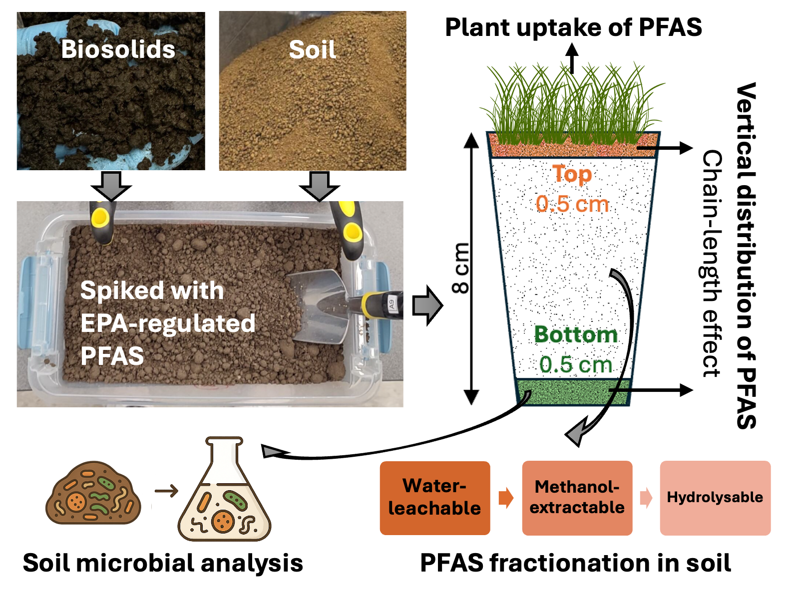
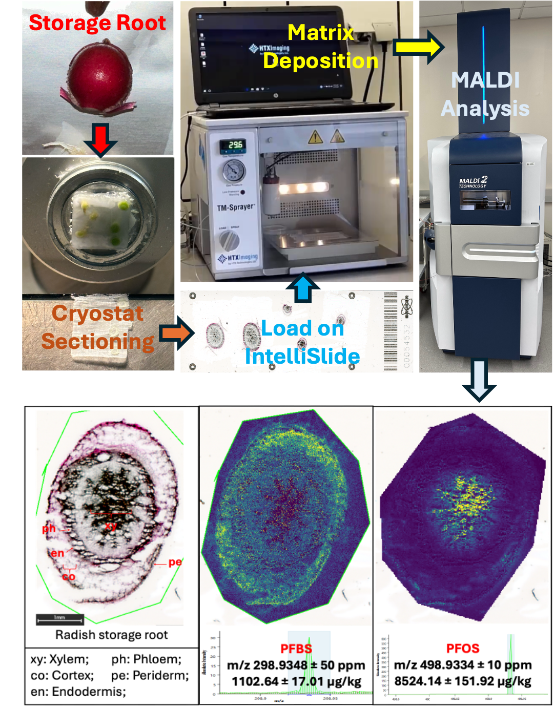
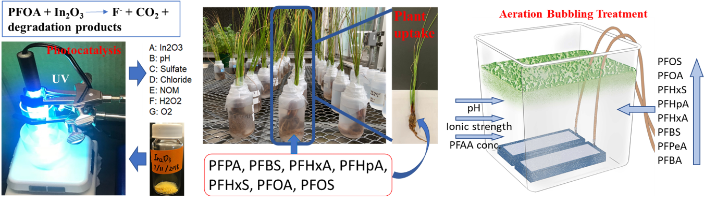
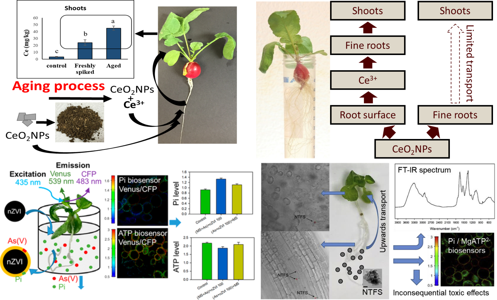
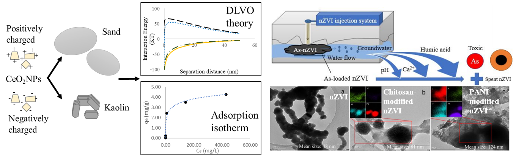

• Investigating PFAS bioaccumulation behavior, uptake mechanisms, and food quality implications in edible crops (2025 - 2028)
-- Role: PI; Funding source: NSF
• PFAS in land-applied biosolids in agricultural settings: a mechanistic understanding on fate and mitigation (2024 - 2027)
-- Role: Co-PI; Funding source: U.S. EPA
• Assessing and mitigating PFAS contamination risks in surface water due to biosolids land application in the Great Lakes basin (2024 - 2025)
-- Role: PI; Funding source: NYS Water Resources Institute (WRI) and NYS Department of Environmental Conservation (DEC)
• PFAS Assessment (2022 - 2027)
-- Role: Co-PI; Funding source: USDA Economic and Policy Analysis Division
• Collaborative Research: ERASE-PFAS: Stabilization of Per- and Polyfluorinated Substances in Sewage Sludge Intended for Land-application (2022 - 2025)
-- Role: Co-PI; Funding source: NSF

PFAS distribution, fractionation, and transport in biosolids-amended soil, and PFAS effects on the soil ecosystem, etc.
• Visualization and spatial mapping of PFAS

This research focuses on how PFAS compounds are taken up by plants from contaminated soil and water sources, examining bioaccumulation mechanisms and their environmental and health implications.

Phytoremediation, Hydrothermal liquefaction, Stabilization, Adsorption, etc.

